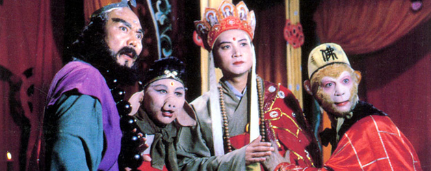
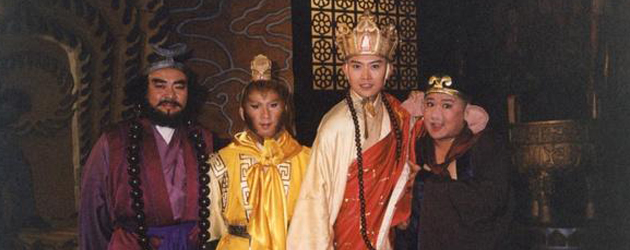

《西游记》简介
《西游记》其想像新奇，上天下地，出神入化，可说达到了登峰造极的地步。主要人物的性格也极为鲜明，而且读者面最宽，老少咸宜。此书的副作用极小，是一部鼓舞人积极斗争、永不灰心、为达到目标而百折不挠的书。

《西游记》主要描写的是唐僧、孙悟空、猪八戒、沙僧（悟净）师徒四人西天取经，历经九九八十一难的故事。唐僧取经是历史上一件真实的事。大约距今一千三百多年前，即唐太宗贞观元年（627），年仅25岁的青年和尚玄奘离开京城长安，只身到天竺（印度）游学。他从长安出发后，途经中亚、阿富汗、巴基斯坦，历尽艰难险阻，最后到达了印度。他在那里学习了两年多，并在一次大型佛教经学辩论会任主讲，受到了赞誉。贞观十九年（645）玄奘回到了长安，带回佛经657部。他这次西天取经，前后十九年，行程几万里，是一次传奇式的万里长征，轰动一时。后来玄奘口述西行见闻，由弟子辩机辑录成《大唐西域记》十二卷。但这部书主要讲述了路上所见各国的历史、地理及交通，没有什么故事。及到他的弟子慧立、彦琮撰写的《大唐大慈恩寺三藏法师传》，则为玄奘的经历增添了许多神话色彩，从此，唐僧取经的故事便开始在民间广为流传。
查看更多

《西游记后传》是陕西省电视节目交流中心2000年出品的一部神话剧，改编自吴承恩所著古典小说《西游记》，由李源执导，钱雁秋改编，曹荣、黄海冰、吴健、黑子、马雅舒等人主演。
该剧主要讲述了唐僧师徒西天取经之后，魔头无天在如来佛祖圆寂后大闹三界，孙悟空带领三界帮助如来转世灵童乔灵儿重返灵山的故事。该剧已于2000年播出并获得第18届金鹰奖电视美术片类最佳奖。
查看更多